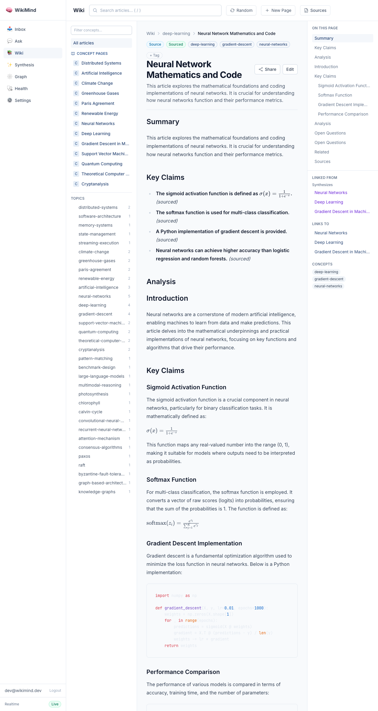
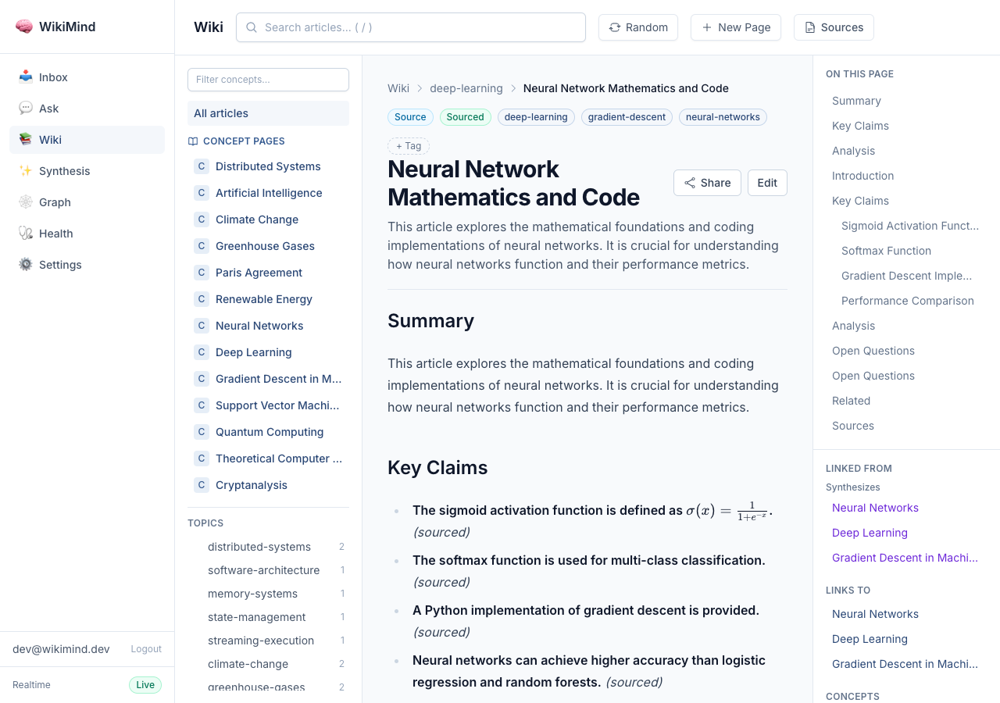

Real evidence: articles with rendered LaTeX math, syntax-highlighted code blocks, and structured sections
An article ingested with LaTeX formulas, Python code, and a comparison table. The wiki renders:

Close-up showing the sigmoid formula rendered as LaTeX math inline within Key Claims, with (sourced) confidence badges.

The wiki explorer showing all compiled articles with page type badges (Source, Concept, Synthesis), concept tags, and topic facets.
The article API returns structured content with markdown body, concepts, backlinks, and metadata.
{
"id": "83434b7d-ea00-4ae1-8ad3-3d0c8bc1683e",
"slug": "machine-learning-fundamentals-3",
"title": "Machine Learning Fundamentals",
"summary": "This article introduces key concepts in machine learning...",
"confidence": "sourced",
"confidence_score": 0.64,
"effective_confidence": 0.64,
"concepts": [
"deep-learning", "gradient-descent", "neural-networks",
"pattern-matching", "support-vector-machines"
],
"backlinks_in": [
{
"title": "Neural Networks",
"slug": "concept-neural-networks",
"relation_type": "synthesizes"
},
{
"title": "Deep Learning",
"slug": "concept-deep-learning",
"relation_type": "synthesizes"
}
],
"page_type": "source",
"sources": [{
"source_type": "text",
"title": "Machine Learning Fundamentals"
}],
"content": "## Summary\n\n...## Key Claims\n\n- **Machine learning uses neural networks...**\n..."
}
Evidence generated 2026-05-09 from a live WikiMind instance. All API responses and screenshots are real.